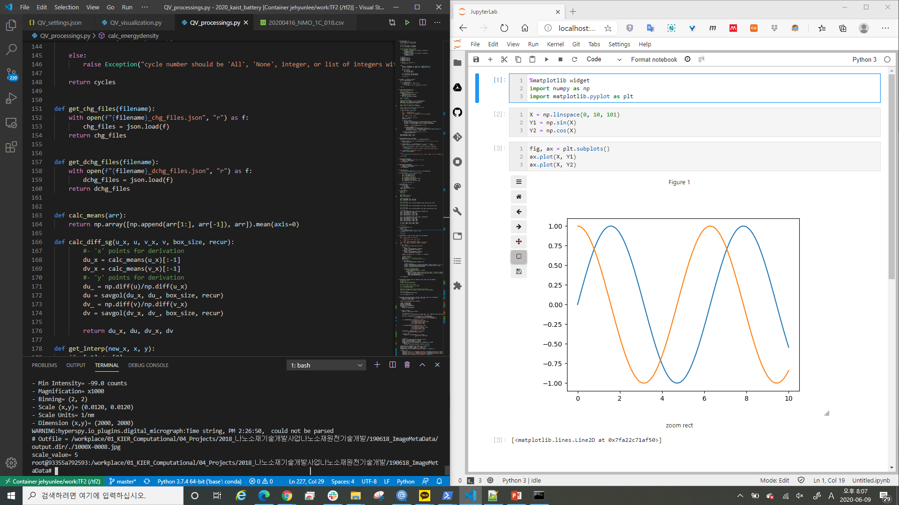
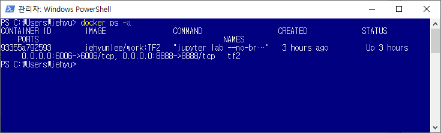
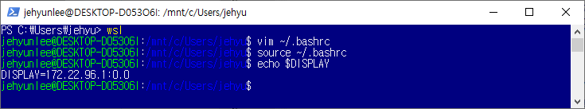
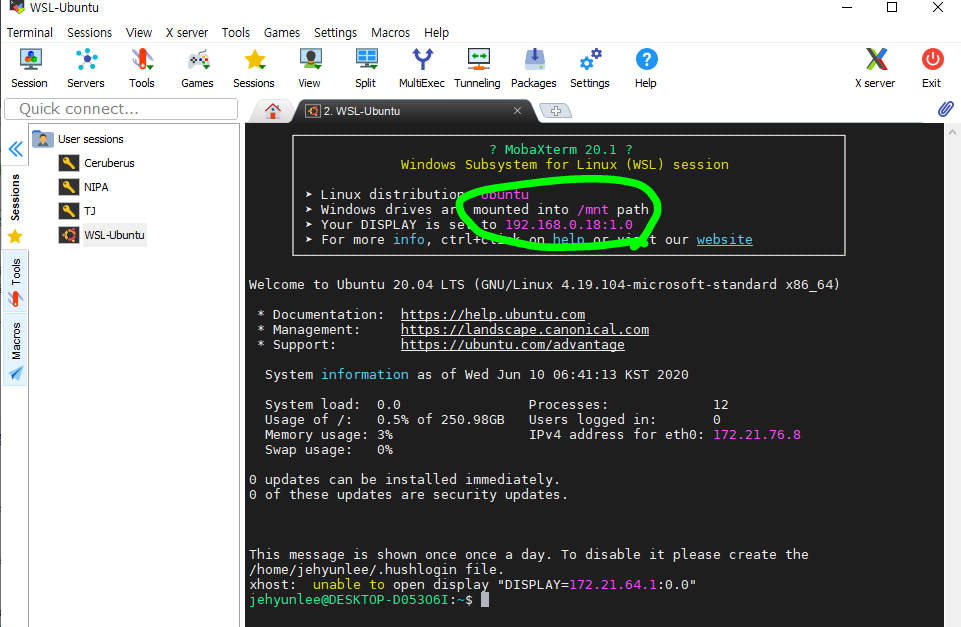
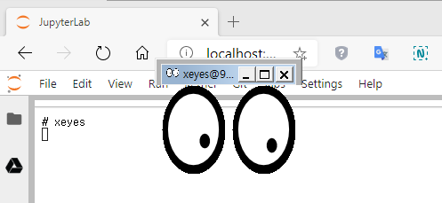
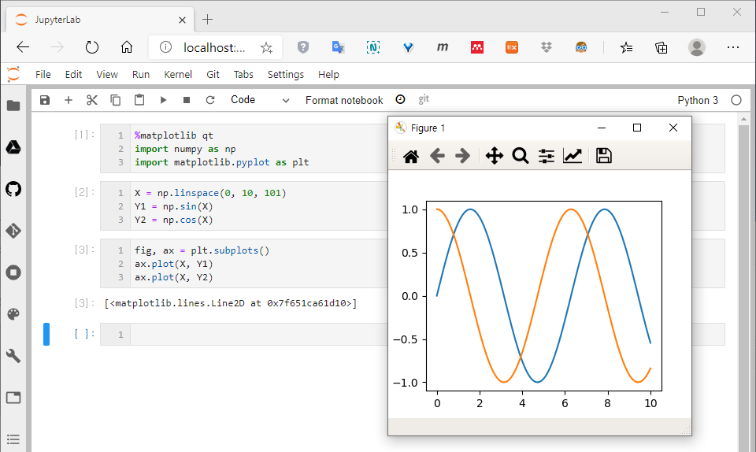
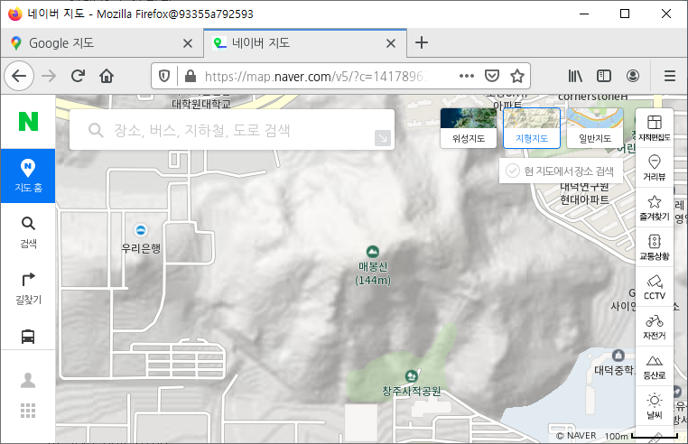

References
Microsoft: WSL 2와 WSL 1 비교
Microsoft: Windows 10에 Linux용 Windows 하위 시스템 설치 가이드
docker blog: Docker Desktop: WSL 2 Best practices
ubuntu Discourse: Getting graphical applications to work on WSL2
Visual Studio Code: Developing in WSL
홀로 떠나는 여행: docker와 GUI 환경 연결
- Microsoft에서 출시한 WSL 2와 docker의 궁합이 매우 좋습니다.
- 특히 WSL 2에 Docker를 설치하면 wsl의 단점을 메워줍니다.
- 여기에 VSCode를 끼얹어주면 개발 환경이 상당히 편리해집니다.
1. WSL 단독 또는 Windows + Docker 사용시 불편한 점
- WSL을 2018년 초부터 1년여 사용할 때 불편한 점들이 있었습니다.
당시 테스트 버전이던 WSL 2를 설치하고 윈도가 날아간 뒤 도커를 1년 좀 안되게 썼는데, 여기에도 불편한 점들이 있었습니다.
1. WSL이건 docker건 따로 실행해야 합니다 :- Ubuntu 기반의 개발 환경을 원하는 것이지 Linux 자체를 원한 건 아닙니다.
2. WSL 파일 공유가 불편합니다 :
- 윈도에서 WSL로 복사한 파일은 실시간 인식이 되지 않습니다.
3. 옷 위에 옷을 껴입는 느낌입니다 :
- 윈도 부팅 → 도커 실행 → 컨테이너 실행으로 이어지는 과정이 번거롭습니다.
2. WSL + Docker + VSCode
제가 피부로 느끼는 WSL + Docker + VSCode 시스템의 장점은 다음과 같습니다.
1. docker를 따로 실행할 필요가 없습니다 :- 부팅시 윈도가 docker를 띄우고 vscode가 컨테이너를 불러줍니다.
2. WSL과의 파일 공유가 편해집니다 :
- docker의 volume share를 통해 실시간 공유가 됩니다.
3. 그냥 windows를 쓰는 느낌입니다 :
- 라이브러리 설치 등을 제외하고는 vscode, 탐색기 모두 윈도에서 씁니다.

- 심지어
docker ps등의 명령도 윈도 파워셸에서 실행할 정도로 자연스럽습니다.
- 모든 환경이 windows 자체를 쓰는 느낌이 장점이기도 하지만 단점일 때도 있습니다.
- docker container에서 X-Window를 띄우려면 어디를 손댈지 조금 난감하기 때문입니다.
아무 설정을 하지 않으면 아래 메시지 이후 에러가 나고 실행이 되지 않습니다.
1
2QStandardPaths: XDG_RUNTIME_DIR not set, defaulting to '/tmp/runtime-root'
QXcbConnection: Could not connect to displayWSL에 설치된 docker에서 X-Window를 띄우려면 약간의 수고가 필요합니다.
2. X-Window on Docker on WSL 2 설정
- 다음과 같은 순서로 진행합니다.
1. (Windows) Xserver 설치 : VcXsrv 등을 설치하고 실행합니다.
- XLaunch의 Extra settings에 나오는 Disable access control을 체크합니다.
- mobaXterm을 설치하는 것도 방법입니다.
- mobaXterm은 ssh, sftp, display를 한 곳에서 사용하고 저장할 수 있어 편리합니다.
2. (WSL) export DISPLAY : Windows Powershell에서 wsl을 실행해 WSL로 들어갑니다.
.bashrc에 DISPLAY 설정을 다음과 같이 추가합니다.1
2
3
4
5export DISPLAY=$(grep -m 1 nameserver /etc/resolv.conf | awk '{print $2}'):0.0
xhost +local:docker # docker에서 실행되는 모든 프로그램을 X-Window와 통신하게 해줍니다.
# 제 경우는 이 설정은 동작하지 않은 듯 하나 문제가 없었습니다.
# 이 명령을 실행하려면 apt-get install x11-apps 를 먼저 실행해야 합니다.source ~/.bashrc명령으로 설정을 적용합니다.
mobaXterm을 설치했다면 mobaxterm에 보이는 IP를 적용해야 합니다.

3. (WSL) Container 띄우기 : X11과 DISPLAY를 공유하도록 실행합니다.
-v /tmp/.X11-unix:/tmp/.X11-unix과-e DISPLAY=$DISPLAY가 핵심입니다.- 윈도와 공유할 폴더를
-v /mnt/c/{로컬디렉토리}:/{wsl디렉토리}방식으로 추가 지정합니다. -e DISPLAY=$DISPLAY가 안되면-e DISPLAY=unix$DISPLAY로 해 봅시다.1
$ docker run -it --name={컨테이너 이름} -v /tmp/.X11-unix:/tmp/.X11-unix -v /mnt/c/{로컬디렉토리}:/{wsl디렉토리} -e DISPLAY=$DISPLAY -p 8888:8888 -p 6006:6006 {docker image}
4. (Docker) X-Window 확인 : 컨테이너에 들어가서 X-Window를 띄워봅니다.
- 간단한 X-Window 앱을 설치하고 실행해봅시다.
1
2
3$ apt-get update
$ apt-get install x11-apps
$ xeyes
2. X-Window on Docker on WSL 2 실행
- 이제 리부팅을 해도 docker에서 X-Window를 띄워볼 수 있습니다.
Jupyter에서
%matplotlib qt로 새 창에 그래프를 띄운 모습입니다.
네이버 지도도 firefox에서 잘 떴습니다. GIS 작업도 문제 없겠군요. :)
